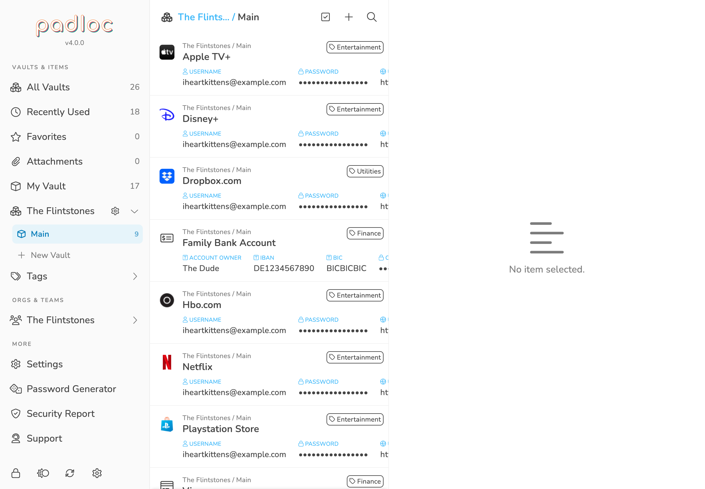
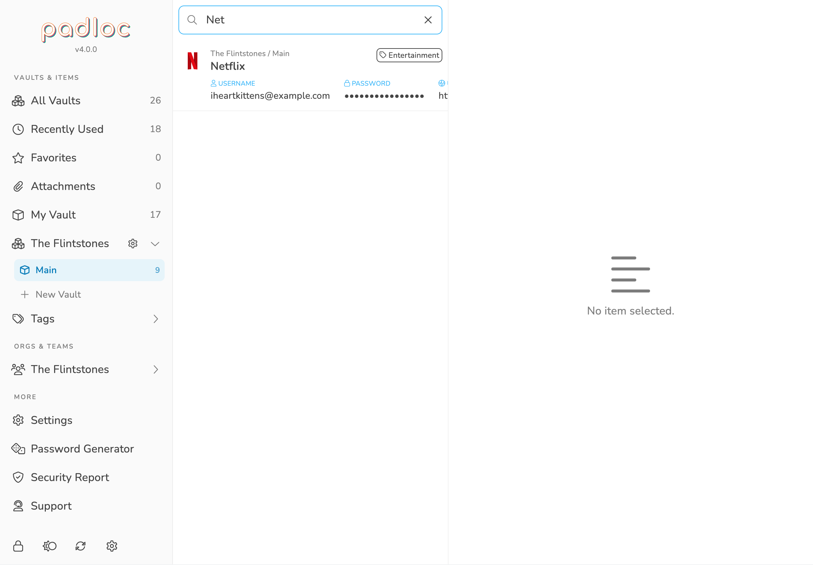

Searching & Filtering
Searching and filtering is is easily one of the most overlooked aspects of a password manager. Over time a lot of data will be accumulating in your vaults and being able to quickly and easily find the data you need at any given moment is essential for a productive workflow and will save you a lot of time in the long run. Luckily this is one of the areas where Padloc really shines! Here are a couple of ways to quickly find what you need.
Filtering By Vaults
By default, Padloc displays all of your items in one list. If you want to see only the items in a specific vault, simply select it from the main menu.
Tip: On smaller screen sizes the main menu might not be visible by default. In that case you can bring up the main menu by clicking the header in the list view!
To learn more about how to create and manage shared vaults, check out the Organizations & Shared Vaults section of the manual!

Filtering By Tags
Tags are a simple but powerful way to organize items by type, areas of use or any other criteria you can come up with. They also allow you to quickly discover items you have previously tagged! To list all items with a given tag, simply select it from the main menu under .
You can learn more about how to create and manage tags in the Vaults & Vault Items section of the manual!
Favorites
Your favorites are vault items that you use a lot or are especially important to you form some other reason. favorites. To list all you favorite vault items simply select the option from the main menu. Want to know how to add a vault item to your favorites? Check out the Vaults & Vault Items section of the manual!
Recently Used Items
For most users, it is non uncommon to only have a handful of password that are actually needed day-to-day. Wouldn't it be great to have a convenient way of listing these items with a single click? Why yes of course, and Padloc let's you do just that. To list all you favorite vault items simply select the option from the main menu, or pick it from the dropdown in the header of the list view.
Attachments
Need to find that one document you stored in Padloc a while ago but forgot how you named it? Listing only the vault items that have attachments will make the search much easier! To do this, simply select the option from the main menu or pick it from the dropdown in the header of the list view.
To learn more about how to attach files to vault items, check out the Vaults & Vault Items section of the manual!
Searching
Last but not least, the free search is probably the simplest and most powerful tool to quickly find what you need. Simply click the button and type away! Usually a couple of key strokes will narrow down the list enough to spot what you're looking for!
For simplicity's sake, the full search always searches all your items, regardless of whether you had a filter applied when you started searching. Canceling the search will bring you right back to where you started though.

Protip: For those who like keyboard shortcuts: You can also use ⌘ + F to jump straight into the search input! Press Esc to cancel the search.